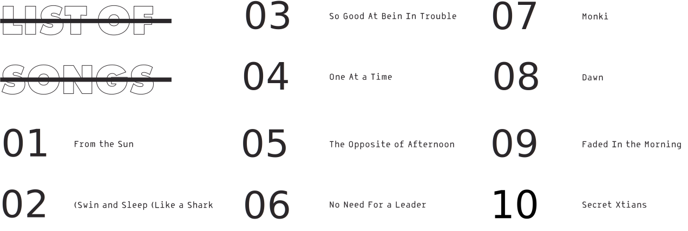
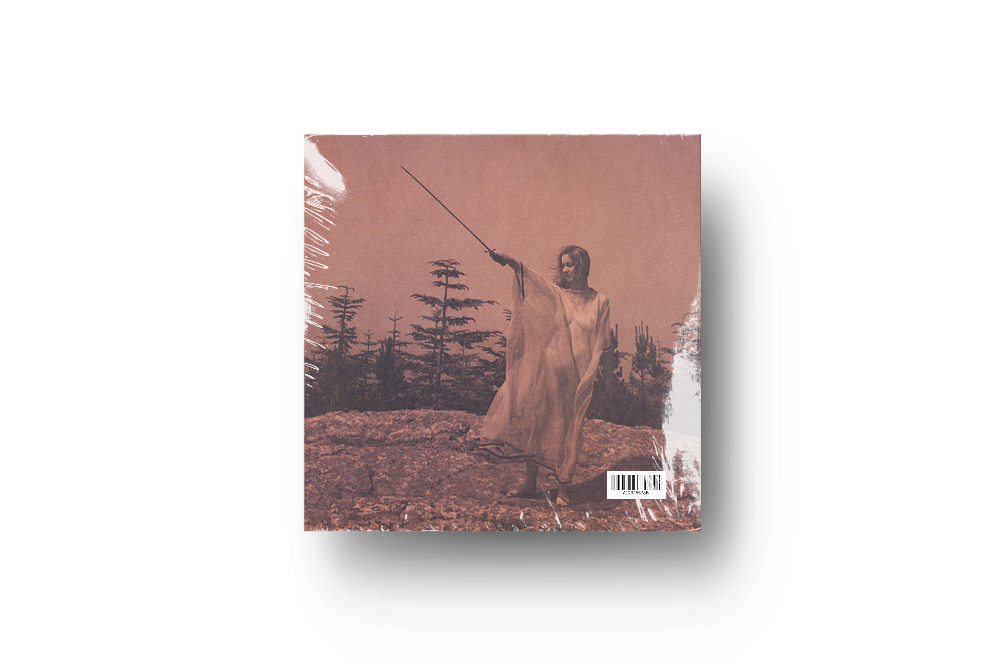
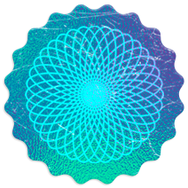

ALBUM 2
II | TWO
 


II is the second studio album from the band Unknown Mortal Orchestra, released in February 2013. II has received widespread critical acclaim. In November 2013 it won Best Alternative Album at the New Zealand Music Awards. II was nominated for the Taite Music Prize 2014, an annual music prize awarded for the best album from New Zealand. Clash Music gave the album a 9 out of 10, saying "from opener 'From The Sun', which recalls George Harrison-psychedelia, to the tender Family Stone shuffle of the closing of II' displays a glowing warmth in its production and a deft use of space that illuminate Nielson's superbly crafted compositions.
During the winter of 2012, Unknown Mortal Orchestra capitalized on the success of II and embarked on a world tour. The tour started off with shows in Australia, and hometown shows in New Zealand, followed by several stops in Europe. The band then toured extensively throughout North America with opener Foxygen. In March 2013, Unknown Mortal Orchestra was named one of Fuse TV's 30 must-see artists at SXSW. Unknown Mortal Orchestra consistently sold out shows in both the UK/Europe and in North America, and as a result of their success on the road they announced in early April that they would extend their tour through the end of 2013.
Paste magazine | 26 February 2013

This is my interpatation of the album cover. The cover is a photo of British author Janet Farrar taken by husband Stewart Farrar. This is my version of it.
(Janet Farrar (born Janet Owen on 24 June 1950) is a British teacher and author of books on Wicca and Neopaganism. Along with her two husbands, Stewart Farrar and Gavin Bone, she has published "some of the most influential books on modern Witchcraft to date". According to George Knowles, "some seventy five percent of Wiccans both in the Republic and Northern Ireland can trace their roots back to the Farrars.")
A digital skatch, 300X300 mm.